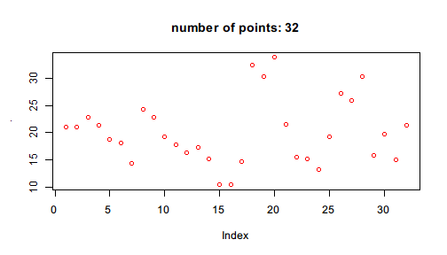

Many R functions are pipe-friendly: they take some data by the first argument and transform it in a certain way. This arrangement allows operations to be streamlined by pipes, that is, one data source can be put to the first argument of a function, get transformed, and put to the first argument of the next function. In this way, a chain of commands are connected, and it is called a pipeline.
Here is an example of reorganizing code in pipeline written with elementary functions.
Suppose the original code is
summary(sample(diff(log(rnorm(100,mean = 10))),
size = 10000,replace = TRUE))
# Min. 1st Qu. Median Mean 3rd Qu. Max.
# -0.3013000 -0.0830800 -0.0116400 -0.0004926 0.0723500 0.2795000
Note that rnorm(), log(), diff(), sample(), and summary() all take the data as the first argument. We can use %>>% to rewrite the code so that the process of data transformation is straightforward.
library(pipeR)
set.seed(123)
rnorm(100, mean = 10) %>>%
log %>>%
diff %>>%
sample(size = 10000, replace = TRUE) %>>%
summary
# Min. 1st Qu. Median Mean 3rd Qu. Max.
# -0.309500 -0.083720 -0.012360 -0.001854 0.071440 0.358400
The syntax of first argument piping is that, on the right-hand side of %>>%, whenever a function name or call is supplied, the left-hand side value will always be put to the first unnamed argument to that function.
| Syntax | Evaluate as |
|---|---|
x %>>% f |
f(x) |
x %>>% f(...) |
f(x,...) |
Although you can write everything in one line but that is probably not very elegant. It is better to be generous to trade readability with the number of lines.
Note that, at each line, whenever we want to continue building the pipeline with the previous result, we end that line with %>>%. If one line does not end up with %>>%, the pipeline ends.
Some more examples with graphics functions:
mtcars$mpg %>>%
plot
mtcars$mpg %>>%
plot(col="red")
Sometimes the value on the left is needed at multiple places. In this case you can use . to represent it anywhere in the function call.
Plot mtcars$mpg with a title indicating the number of points.
mtcars$mpg %>>%
plot(col="red", main=sprintf("number of points: %d",length(.)))

Take a sample from the lower letters of half the population.
letters %>>%
sample(size = length(.)/2)
# [1] "p" "j" "o" "x" "q" "e" "z" "u" "i" "l" "f" "a" "m"
There are situations where one calls a function in a namespace with ::. In this case, the call must end up with parentheses with or without parameters.
mtcars$mpg %>>%
stats::median()
mtcars$mpg %>>%
graphics::plot(col = "red")
The same rule also applies when piping a value to a function in a list.
functions <- list(average = function(x) mean(x))
mtcars$mpg %>>% functions$average()
mtcars$mpg %>>% functions[["average"]]()
In both cases above, () is necessary to make R expect the symbol before () to be a function, or otherwise $ and [[ themselves will be understandably regarded as the function we want to pipe value to.
Notice that %>>% not only works between function calls, but also can be nested in function calls. For example,
mtcars %>>%
subset(mpg <= quantile(mpg,0.95), c(mpg, wt)) %>>%
summary
# mpg wt
# Min. :10.40 Min. :1.513
# 1st Qu.:15.28 1st Qu.:2.772
# Median :18.95 Median :3.438
# Mean :19.22 Mean :3.297
# 3rd Qu.:21.48 3rd Qu.:3.690
# Max. :30.40 Max. :5.424
can be written like
mtcars %>>%
subset(mpg <= mpg %>>% quantile(0.95), c(mpg, wt)) %>>%
summary
# mpg wt
# Min. :10.40 Min. :1.513
# 1st Qu.:15.28 1st Qu.:2.772
# Median :18.95 Median :3.438
# Mean :19.22 Mean :3.297
# 3rd Qu.:21.48 3rd Qu.:3.690
# Max. :30.40 Max. :5.424
One important thing to notice here is that pipeR does not support lazy evaluation on left value, that is, the left value will be evaluated immediately which cannot be substituted by the function on the right. One example that may be supposed to work but actually not is
10000 %>>%
replicate(rnorm(1000)) %>>%
system.time
# user system elapsed
# 0 0 0
This is not equivalent to
system.time(replicate(10000, rnorm(1000)))
# user system elapsed
# 1.11 0.03 1.14
even if they actually cost almost the same time to compute. system.time() initiates a timing device when the evaluation starts. In this case however, the value on the left of %>>% is always evaluated before being put to the first argument of the function. That is why system.time() gets zero seconds because it only starts timing after the loop has finished! This is true for other functions that try to compute on language.
Therefore, you should always make sure that the left value should be valid in its own before putting it before %>>%.
In some other cases, the function is not very friendly to pipeline operation, that is, it does not take the data you transform through a pipeline as the first argument. One example is the linear model function lm(). This function take formula first and then data.
If you directly run
mtcars %>>%
lm(mpg ~ cyl + wt)
# Error in as.data.frame.default(data): cannot coerce class ""formula"" to a data.frame
it will fail because %>>% is evaluating lm(mtcars, mpg ~ cyl + wt) which does not fulfill the expectation of the function. There are two ways to build pipeline with such kind of functions.
First, use named parameter to specify the formula.
mtcars %>>%
lm(formula = mpg ~ cyl + wt)
#
# Call:
# lm(formula = mpg ~ cyl + wt, data = .)
#
# Coefficients:
# (Intercept) cyl wt
# 39.686 -1.508 -3.191
This works because it is actually evaluated as
lm(mtcars, formula = mpg ~ cyl + wt)
and R's argument matching program decides that since the first argument in lm()'s definition formula is specified, the unnamed argument mtcars is regarded as specifying the second argument data, which is exactly what we want. Therefore, it works fine here.
However, this trick only makes it easy for some functions but not all. Suppose a function that takes data as the third or fourth argument. In this case, you would have to explicitly specify all previous arguments by name. If data argument follows ..., the trick would not work at all.
Dot piping is designed for more flexible pipeline construction. It allows you to use . to represent the left-hand side value and put it anywhere you want in the next expression. The next page demonstrates its syntax and when it might be useful.